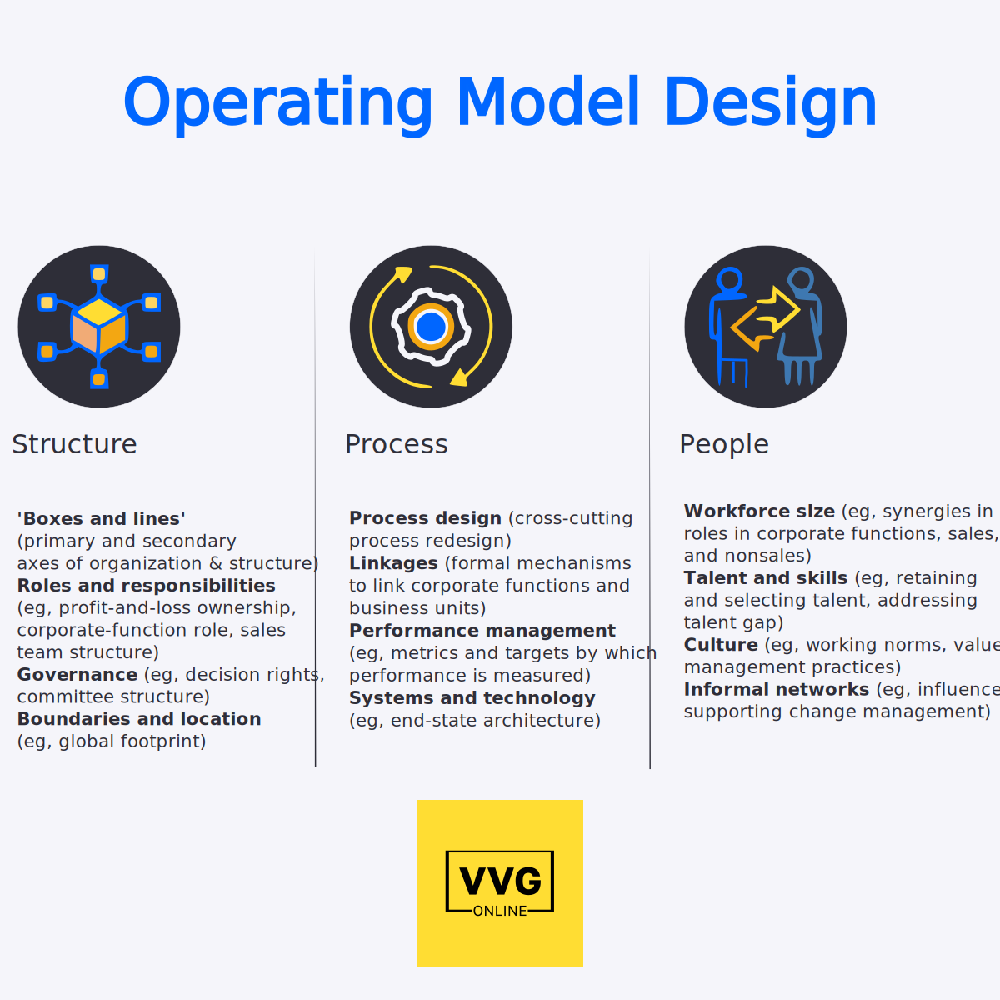

This image presents a framework for thinking about operating model design holistically,
emphasizing that decisions related to organizational structure and processes are critical and
directly impact value delivery. It breaks down the operating model into three key pillars:
Structure, Process, and People.
Let's delve into each pillar in detail: